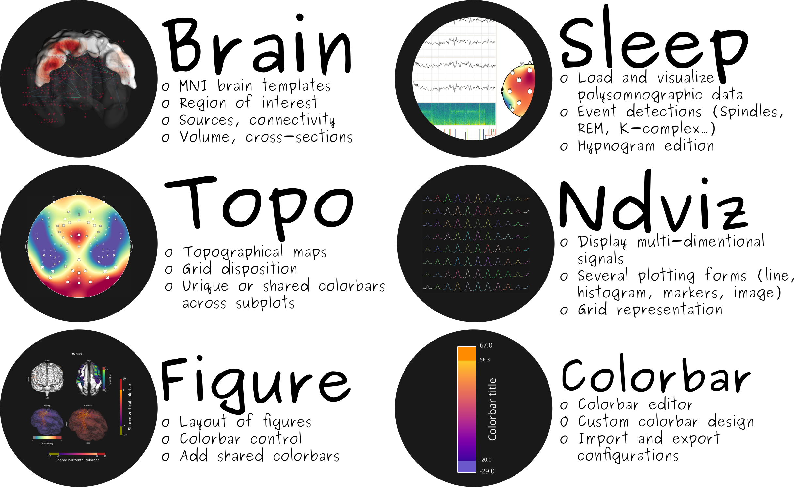

Visbrain documentation¶
Visbrain is an open-source python 3 package dedicated to brain signals visualization. It is based on top of VisPy and PyQt and is distributed under the 3-Clause BSD license.

Visbrain includes six visualization modules :
- Brain : visualize EEG/MEG/Intracranial data, connectivity in a standard MNI 3D brain (see Brain examples).
- Sleep : visualize polysomnographic data and hypnogram edition (see Sleep examples).
- Signal : data-mining module for time-series inspection (see Signal examples).
- Topo : display topographical maps (see Topo examples).
- Figure : figure-layout for high-quality publication-like figures (see Figure examples).
- Colorbar : colorbar editor (see Colorbar examples).
See the Changelog and future directions.
Installation¶
Dependencies¶
Here’s the list of visbrain’s dependencies :
- Numpy (>= 1.13)
- Scipy
- Vispy (>= 0.5.0) : fast graphics rendering
- Matplotlib (>= 1.5.5): mainly for colors and colormaps integration
- PyQt5 : Graphical User Interface components
- Pillow : for screenshots and image file format support.
We also strongly recommend to install pandas and pyopengl :
pip install pandas PyOpenGL PyOpenGL_accelerate
Installation¶
For the PyQt5 version, Matplotlib’s version should be >= 1.5.5. If PyQt is not installed, run either pip install pyqt5 or conda install pyqt. Then, in a terminal run :
Install Visbrain :
pip install visbrain
Develop mode¶
git clone https://github.com/EtienneCmb/visbrain.git visbrain/
cd visbrain/
pip install -r requirements.txt
python setup.py develop